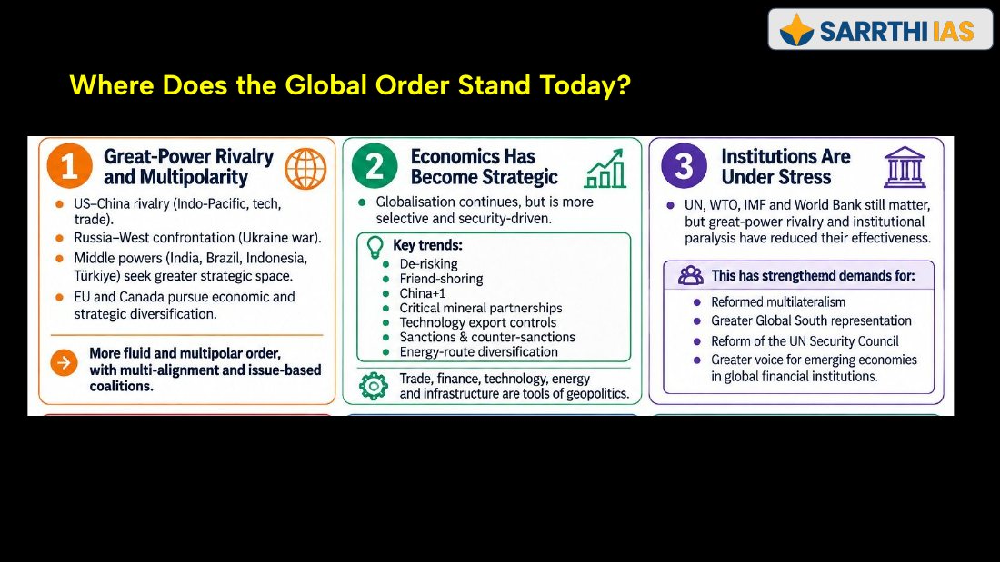
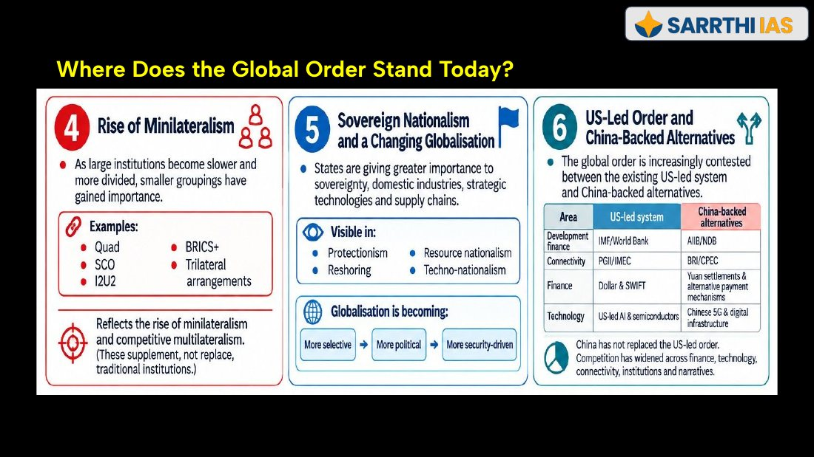

Chapter 2: Major Powers
Phase 5 and 6 rivalry (US-China, Russia-West) is unpacked there with each power’s ambitions and instruments.
How the world order moved through six phases, from Westphalia to today’s multipolar churn, and how India’s foreign policy answers it: goals, ten determinants, six periods, five trade-offs and seven challenges.
| Signal in the material | Where | Why it matters |
|---|---|---|
| IR carries 4 questions and 50 marks every year: Q9 and Q10 (10 marks, 150 words) and Q19 and Q20 (15 marks, 250 words) | Slide 3 (PPT-1) | Fixes your time per answer. The slide says the placement has stayed consistent over the years. |
| “Questions are broader now”: themes asked in a wider context, not as direct bilateral questions | Slides 4 and 5 (PPT-1) | Open every answer with the global setting, then narrow to India. |
| Statement-based questions that must be tested, not endorsed | Slide 4 (PPT-1) | Use “agree in part, but…”. Every 2026 question opened with a strong claim. |
| Order of study: big picture first, major powers before bilaterals | Slide 5 (PPT-1) | Chapter 1 is the big picture; Chapter 2 gives the powers; bilaterals follow. |
| Phase 6 “Essence of the phase”: Rivalry → Strategic Realignment → Economic and Tech Fragmentation → Multipolarity → Institutional Paralysis | Slide 21 (PPT-1) | A ready-made one-line introduction for any current-affairs IR answer. |
| “Where does the global order stand today?”: six features, with a US-led versus China-backed table | Slides 22-23 (PPT-1) | The six features are a checklist for the “context” paragraph. |
| India’s “Central thread: strategic autonomy” and the “Key ideas” keyword table | Slides 21-22 (PPT-2) | Strategic autonomy is the answer to “why does India do X?”. |
| “Not a shift from values to interests”: India still follows its values but has more capability | Handout p. 17 | Answers “Has India given up idealism?” type questions. |
| Year, marks, words | What was asked | Answer or trap | Where in this chapter | Source |
|---|---|---|---|---|
| Mains 2026 · Q9 · 10 marks · 150 words | IPMDA (Indo-Pacific Partnership for Maritime Domain Awareness) “bridges the gap between India’s SAGAR vision and the Quad’s collective Indo-Pacific strategy.” Critically assess, focusing on IPMDA. | Open-ended. See the skeleton in Practice. | Partial: SAGAR/MAHASAGAR and Quad in section 11 and Chapter 2. IPMDA itself is not in these notes. | slides 3 |
| Mains 2026 · Q10 · 10 marks · 150 words | BRICS “acts as a powerful counterweight in global governance, actively amplifying the voice and influence of the Global South.” Explain the role of BRICS in projecting itself as an alternative to other groupings. | Open-ended. See the skeleton in Practice. | BRICS in sections 5, 6, 7 and 11 | slides 3 |
| Mains 2026 · Q19 · 15 marks · 250 words | India’s global diaspora “acts as a living bridge, as a critical economic factor and knowledge network in transforming cultural heritage into geopolitical influence and strategic leverage.” Critically examine. | Open-ended. See the skeleton in Practice. | Determinant 9 in section 8; evacuations in sections 8 and 11; US diaspora in Chapter 2 | slides 3 |
| Mains 2026 · Q20 · 15 marks · 250 words | China’s BRI “has transformed South Asia from a regional space into a theatre of great power competition.” Analyse the strategic implications for India’s security and regional influence in South Asia. | Open-ended. Answered in Chapter 2. | Chapter 2 (also BRI 2013 in section 6 here) | slides 3 |
| Mains 2025 · 10 marks · 150 words | “With the waning of globalization, post-Cold War world is becoming a site of sovereign nationalism.” Elucidate. | Open-ended. See the skeleton in Practice. | Sections 6 and 7 | handout p. 21 |
| Mains 2020 · 15 marks · 250 words | “Quadrilateral Security Dialogue (Quad)” is transforming itself into a trade bloc from a military alliance, in present times: discuss. | Open-ended. See the skeleton in Practice. | Sections 6, 7, 9 and 11 | handout p. 21 (also quoted in Chapter 2) |
| Mains 2019 · 15 marks · 250 words | “The long-sustained image of India as a leader of the oppressed and marginalised nations has disappeared on account of its new found role in the emerging global order.” Elaborate. | Open-ended. See the skeleton in Practice. | Sections 9 and 10 | handout p. 21 |
Mains years quoted: 2026 (four questions, quoted on slide 3), 2025, 2020 and 2019. Prelims years quoted: none quoted in the material. Question 20 of 2026 and the Quad question of 2020 are also quoted in Chapter 2.
International Relations (IR) is the study of how countries interact with one another and with other actors across borders: international organisations, companies, social movements and individuals. Its core question is: why do countries behave the way they do? Behaviour is shaped by power, security, economic interests, ideas and institutions. IR is wider than war and diplomacy: it includes trade, technology, energy, climate change, migration and global institutions.
| Term | Meaning | Main question |
|---|---|---|
| Foreign policy | What a country wants from the outside world and how it pursues those goals | What does a country want to achieve abroad? |
| Geopolitics | How geography, location and resources affect power and strategy | Why does location matter? |
| Global order | How power, rules and institutions are arranged in the world | Who has influence, and how is the system organised? |
| Phase | Period | Defining character |
|---|---|---|
| Phase 1 | Until 1914 | Sovereign states, empires and the balance of power |
| Phase 2 | 1919 to 1945 | Liberal experiment, its failure and a second world war |
| Phase 3 | 1945 to 1991 | Two superpowers, nuclear deterrence and new institutions |
| Phase 4 | 1991 to 2008 | American primacy, globalisation and the Washington Consensus |
| Phase 5 | 2008 to 2019 | Crisis of the liberal order and the rise of new powers |
| Phase 6 | 2020 onwards | Post-COVID fragmentation, economic nationalism and multipolar churn |
The handout’s warning: the world did not move in a straight line from war to peace. Every phase mixed power politics, cooperation and competing ideas, and each new phase carried features of the older one.
“A country that demands moral perfection in its foreign policy will achieve neither perfection nor security.” (Henry Kissinger, quoted in the handout.)
| Concept | Meaning |
|---|---|
| Sovereignty | Supreme authority inside its territory; accepts no outside authority over it |
| International anarchy | Not chaos. There is no world government above states, so no one but the state itself can guarantee its safety |
| Nation-state | A state (fixed territory, population, government) where state and nation (a people who feel they belong together by language, culture or history) broadly match |
| Security dilemma | One state arms for defence, others feel threatened and arm too. Both end up less secure, though neither wanted war |
| Balance of Power (BoP) | States act to prevent any one power becoming dominant |
Realism sees international politics as a struggle for security, survival and sovereignty. With no authority above states, countries rely on self-help and build their own power. This creates mistrust: one state’s build-up makes others feel threatened.
After World War I, ideas of collective security, cooperation and economic interdependence gained ground. Many proposals were not fully realised because of geopolitical resistance and continuing power politics.
| Concept | Meaning |
|---|---|
| Liberalism | War is not inevitable. Institutions, trade, democracy and international law can build cooperation without a world government |
| Collective security | All members act together against any aggressor. It works only when major powers are willing to enforce it |
Liberal institutions promoted cooperation and collective security, while US-USSR rivalry drove military blocs, proxy wars and the arms race. A third strand, Idealism, appeared as the Non-Aligned Movement.
| Institution or agreement | Purpose |
|---|---|
| United Nations (1945) | Peace, diplomacy, collective security. Superpower rivalry often limited it |
| IMF and World Bank | Economic stability and reconstruction |
| Marshall Plan | About 13 billion dollars for rebuilding Europe; also aimed to contain communism |
| NPT (1968) | Prevent spread of nuclear weapons; laid the ground for SALT (Strategic Arms Limitation Talks) |
| Stockholm Conference (1972) | Early global cooperation on environmental protection |
| Schengen Agreement (1985) | Free movement and economic integration in Europe |
Cooperation and great-power interests: liberal institutions did not work apart from power politics. The Marshall Plan helped rebuild Western Europe and served containment. The USSR created COMECON to deepen economic cooperation and keep influence over Eastern Europe.
| Feature | Detail |
|---|---|
| Blocs | NATO (1949) versus Warsaw Pact (1955) |
| Proxy wars | Korean War and Vietnam War |
| Nuclear arms race | Huge arsenals; Cuban Missile Crisis (1962) brought the world close to nuclear war |
| Middle East | Yom Kippur War (1973): US backed Israel; USSR backed Arab states |
| Result | Bipolarity: a world dominated by two powers, with smaller states pressed to align |
| Strand | Core idea | Examples |
|---|---|---|
| Liberalism | Institutions bring cooperation | UN 1945, IMF-World Bank, NPT 1968, Stockholm 1972, Schengen 1985, Marshall Plan, COMECON |
| Realism | Rivalry and power balance | NATO 1949, Warsaw Pact 1955, Korea, Vietnam, Cuban Missile Crisis 1962 |
| Idealism | Peace and independence from blocs | NAM 1961, Nehru’s strategic autonomy, with India-USSR Treaty 1971 as a security exception |
The high point of the liberal order: democracy, capitalism, free trade, globalisation and multilateral institutions under strong US leadership. At the same time climate change, terrorism and cybersecurity raised the need for global cooperation, and emerging powers pushed the world towards multipolarity.
| Issue | Marker |
|---|---|
| Climate change | Kyoto Protocol (1997), later the Paris Agreement (2015) |
| Terrorism | 9/11 strengthened counter-terrorism cooperation |
| Cybersecurity | Digital dependence created cross-border vulnerability |
Rise of multipolarity: the economic rise of China, India, Brazil and Russia shifted power away from a purely US-dominated system. BRICS reflected emerging economies’ demand for a greater voice in global governance.
The Global Financial Crisis (2008) weakened Western economies and confidence in the Western-led liberal order. China and India gained weight. The phase saw multipolarity, protectionism, nationalism and strategic competition.
| Trend | What changed |
|---|---|
| Shift to the Indo-Pacific | China and India became major growth centres. 2010: China overtook Japan as the second-largest economy. The US answered with the Pivot to Asia under Obama |
| Reduced US engagement | Focus on domestic recovery; fewer commitments in Iraq and Afghanistan. Later America First under Trump: national interest, tariffs, burden-sharing |
| Rise of BRICS and G20 | Emerging economies sought a bigger global role. BRICS created the New Development Bank (2014). G20 became the platform for managing crises |
| India as a balancing power | Bigger Indo-Pacific role with strategic autonomy, through BRICS, G20 and Quad; keeps seeking reform of global institutions, including a permanent UNSC seat |
| Brexit and European challenges | Brexit (2016): sovereignty, immigration and integration concerns; about 52% voted to leave the EU |
| Migration, nationalism, populism | The Syrian refugee crisis deepened divisions in Europe. Germany took over one million refugees; countries such as Hungary resisted |
| Rise of protectionism | Tariffs and other measures; the US-China trade war is the main example |
| Dimension | Detail |
|---|---|
| Economic and strategic | Manufacturing strength, financial scale, supply-chain centrality. BRI (2013) gave access to chokepoints, ports and energy corridors. Gwadar, Hambantota and CPEC extended presence in the Indian Ocean and reduced dependence on the Malacca Strait |
| Military and maritime | Naval expansion; grey-zone tactics and salami slicing to advance claims; South China Sea and Taiwan tensions; A2/AD in its near seas |
| Technological | Self-reliance in 5G, semiconductors, EVs, batteries. Made in China 2025 (2015). Huawei’s 5G became a symbol of US-China tech rivalry |
| Institutional | Bigger role in BRICS and SCO; AIIB strengthened its role in development finance |
| Term | Meaning and example |
|---|---|
| Salami slicing | Gradual change through small steps that avoid a major response. Example: incremental expansion in the South China Sea |
| A2/AD | Anti-Access/Area-Denial: capabilities to keep an opponent’s forces out of a region. Example: China’s missiles and navy around Taiwan and the South China Sea |
| Strategic chokepoints | Narrow sea passages carrying huge trade and energy flows. Examples: Strait of Malacca, Strait of Hormuz |
| Pivot to Asia | Obama-era shift of US diplomatic, economic and military attention to the Asia-Pacific |
| Made in China 2025 | 2015 industrial policy for advanced manufacturing and strategic technologies (semiconductors, EVs, robotics) |
| Strategic competition | Long-term rivalry for economic, military, technological and political influence without necessarily going to war |
The 2020s have more global and regional conflicts, driven by rivalry, economic shifts and nationalism. States put sovereignty, national security and strategic interests first. Features: strategic recalibration, techno-nationalism, economic nationalism, transactional diplomacy, cyber threats and weaker cooperation.
| Concept | Meaning and example |
|---|---|
| Geoeconomics | Use of trade, tariffs, sanctions, investment or finance to reach strategic goals |
| Weaponised interdependence | Using control over financial, trade or technology networks to pressure another country. Examples: curbs on Russian banks’ access to SWIFT; US chip export controls on China |
| Transactional diplomacy | Foreign policy based on immediate benefits and bargaining, not long-term commitments or shared values |
| Techno-nationalism | Links technology to national security and economic power; states control critical technologies and may deny them to rivals |


| Area | US-led system | China-backed alternatives |
|---|---|---|
| Development finance | IMF / World Bank | AIIB / NDB |
| Connectivity | PGII / IMEC | BRI / CPEC |
| Finance | Dollar and SWIFT | Yuan settlements and alternative payment mechanisms |
| Technology | US-led AI and semiconductors | Chinese 5G and digital infrastructure |
The slide’s own line: China has not replaced the US-led order. Competition has widened across finance, technology, connectivity, institutions and narratives. Minilateral groupings (Quad, SCO, I2U2, BRICS+, trilaterals) supplement, not replace, traditional institutions.
India’s foreign policy changes with the global order (Cold War bipolarity to present multipolar churn), the security environment (China border, Pakistan, terrorism), economic needs (trade, FDI, energy, technology, especially after 1991) and national ambitions (G20, Global South, UNSC reform). Three broad goals stay constant: security, prosperity and an independent voice (strategic autonomy).
| Determinant | Aim and content | Examples |
|---|---|---|
| 1 · Economic development | Create an outside environment that supports growth: export markets and FDI, technology and capital, energy and minerals, reliable supply chains, connectivity, opportunities for Indian business and workers. The 1991 reforms tightened the link | US, EU, Japan (trade and FDI); semiconductors, defence (technology); Russian crude, West Asian oil; China+1; Chabahar, INSTC, IMEC |
| 2 · Security and territorial integrity | Boundary disputes with China and Pakistan; cross-border terrorism; nuclear and missile risks; maritime and cyber security; external influence in the neighbourhood; fragile supply chains. These shape border infrastructure, defence partnerships, nuclear policy, maritime cooperation and opposition to CPEC | LAC preparedness; Indian Ocean surveillance |
| 3 · Geography | Himalayan frontier (China, Nepal, Bhutan); Pakistan blocks direct land access to Afghanistan and Central Asia (so Chabahar matters); Indian Ocean carries trade and energy; Andaman and Nicobar sit near the Indian-Pacific sea routes; neighbours’ instability affects migration, security, connectivity | Malacca Strait; Chabahar |
| 4 · Strategic autonomy | Freedom to decide on India’s own interests: pragmatism, sovereignty, multi-alignment, avoiding rigid alliances | Quad with the US while keeping ties with Russia |
| 5 · Energy and critical resources | Aim: diversification without excessive dependence on any one supplier. West Asia (oil, gas); Russia (crude, nuclear); US (LNG, energy technology); Australia, Africa, Latin America (critical minerals) | National Critical Mineral Mission (2025) |
| 6 · Science and technology | Access to advanced technology while building domestic capability: AI and semiconductors, space and quantum, defence technology, telecom and cyber, nuclear and clean energy, digital infrastructure | India-US critical technology; India-France space |
| 7 · Political values and history | Sovereign equality, anti-colonialism and opposition to racial discrimination, non-interference, peaceful settlement, multilateralism, reform of global institutions. Principles combine with pragmatism | Demand for UNSC reform |
| 8 · Domestic and federal politics | Parliament, parties, industry, media and public opinion shape policy space | Tamil Nadu: Sri Lankan Tamils and fishermen; West Bengal: Teesta; Northeast: Bangladesh and Myanmar connectivity; coastal states: ports |
| 9 · Diaspora and people-to-people ties | One of the world’s largest overseas communities: remittances and investment, business and professional networks, technology and knowledge links, cultural influence, consular protection | Operation Ganga (2022): Ukraine. Operation Kaveri (2023): Sudan. Operation Sindhu (2025): Iran and Israel |
| 10 · Climate and emerging issues | Climate change and finance, sustainable lifestyles, global health, cybersecurity and AI governance, oceans and blue economy, space and polar regions | ISA, CDRI, Mission LiFE |
| Period | Main approach | Key example |
|---|---|---|
| 1947-1962 | Non-alignment and idealism | Panchsheel, NAM |
| 1962-1971 | Security correction | 1962 China war |
| 1971-1991 | Strategic assertion | Indo-Soviet Treaty |
| 1991-1998 | Economic opening | LPG, Look East |
| 1998-2014 | Diversified partnerships | India-US Nuclear Deal |
| 2014-present | Multi-alignment | Quad + BRICS + SCO |
| Earlier approach | Present approach |
|---|---|
| Distance from rival blocs | Engage several power centres |
| Non-alignment | Multi-alignment |
| Limited partnerships | Issue-based partnerships |
| Political autonomy | Economic + technology + security autonomy |
Example on the slide: Russian oil + Quad cooperation + BRICS membership.
| Continuity | Meaning | Example (slide 16) |
|---|---|---|
| Strategic autonomy | Decide on national interest without permanent dependence on any bloc | US + Russia ties |
| National interest | Security, development and sovereignty guide choices | Russian crude |
| Sovereignty and territorial integrity | Independent decision-making; protect borders | Opposition to CPEC through PoK |
| Global South orientation | Anti-colonial solidarity became development partnership, climate justice, institutional reform | Voice of the Global South |
| Dialogue and multilateralism | Peaceful settlement; cooperation | Ukraine diplomacy |
| Neighbourhood centrality | South Asia and the Indian Ocean stay vital | Neighbourhood First |
| Earlier pattern | Emerging pattern |
|---|---|
| Non-alignment | Multi-alignment and issue-based partnerships |
| Post-colonial leadership | Global South leadership |
| Continental focus | Continental + maritime + technology |
| Limited economic leverage | Geoeconomics, DPI and supply-chain partnerships |
| Cautious, defensive diplomacy | Proactive diplomacy and minilateralism (G20, Quad, I2U2, BRICS, SCO, ISA, CDRI) |
| Mainly an aid recipient | Development partner and capacity builder |
| Limited role in shaping rules | Greater ambition to be a rule-shaper |
The handout’s warning: the shift is not from values to interests. India still follows its values but now has more economic, military and diplomatic capability to protect its interests. Examples on the slide: Quad, IMEC, DPI partnerships, G20 Presidency.
| Trade-off | What India must balance | Example |
|---|---|---|
| Strategic autonomy versus deeper alignment | Needs US and Europe for technology, defence, investment and balancing China; wants independence and Russia ties. Sharper US-China and Russia-West rivalry makes it harder | Quad + Russian oil |
| China competition versus continued engagement | Respond on LAC, Indian Ocean, neighbourhood, technology; keep trade and BRICS/SCO engagement; de-risk | Competition: LAC. Cooperation: BRICS, SCO |
| Neighbourhood sensitivity versus security assertion | Protect security and answer instability and outside influence without looking overbearing to smaller neighbours | Maldives, Nepal, Sri Lanka |
| Global South leadership versus major-power partnerships | Speaks for developing countries yet builds close ties with advanced economies. Credibility needs real development support, finance and capacity-building | US, EU, Japan ties |
| Principles versus hard national interest | Supports peace, dialogue and sovereignty yet takes practical decisions on energy, defence and security | Ukraine dialogue + Russian energy |
The handout stresses: a trade-off is two important interests pulling different ways and India balancing both. The challenges below are constraints, not trade-offs.
| Challenge | Content |
|---|---|
| Institutional constraints | UNSC, IMF and World Bank still reflect an older power structure; India seeks UNSC permanent membership |
| Domestic capability | Manufacturing, logistics, technology, defence capacity and resilience must support global ambitions |
| External shocks | COVID-19, Ukraine war, Red Sea disruptions (slide); wars, energy disruptions, crises, supply-chain shocks (handout) |
| Disjointed neighbourhood | South Asia is among the least integrated regions: low regional trade, connectivity gaps, political tension, weak regional institutions (handout only) |
| Technology dependence | Gaps in semiconductors, AI, advanced manufacturing and critical technologies (handout only) |
| Diplomatic capacity | Many engagements need a larger, more specialised diplomatic network (handout only) |
| Global perception and credibility | Growing ambition has to be balanced with development priorities and commitments on governance, climate, trade and norms (handout only) |
| Keyword | Meaning (and example) |
|---|---|
| Strategic autonomy | Independent choices; US + Russia ties |
| Multi-alignment | Engage many power centres; Quad + BRICS |
| Issue-based alignment | Different partners for different issues |
| Vishwabandhu | India as a reliable friend and bridge-builder |
| Net security provider | Regional (especially Indian Ocean) security role |
| First responder | Quick help in crises |
| Neighbourhood First | Priority to immediate neighbours (handout) |
| Act East | Deeper engagement with Southeast Asia and the Indo-Pacific (handout) |
| Reformed multilateralism | Reform UNSC and other institutions |
| Global South leadership | Represent developing-country concerns |
| Area | India’s approach |
|---|---|
| Energy security | Diversify supply: West Asia, Russia, the US and renewable-energy partnerships |
| Supply-chain resilience | China+1, de-risking, friend-shoring, domestic capacity in critical sectors |
| Critical minerals | Partnerships for lithium, rare earths, strategic minerals |
| Connectivity | Chabahar, INSTC and IMEC as alternative trade routes |
| Digital diplomacy | Sharing DPI, UPI and digital public infrastructure |
| Development partnership | Lines of credit, grants, training, capacity-building |
The aim: turn India’s market size, technology and development experience into diplomatic influence.
China affects India’s border security, neighbourhood, Indian Ocean strategy, supply chains and technology choices. India’s response mixes deterrence, de-risking, competition and selective engagement:
| Term | Meaning | Examples |
|---|---|---|
| String of Pearls | China’s network of ports, infrastructure projects and access points across the Indian Ocean region | Gwadar (Pakistan), Hambantota (Sri Lanka), military base in Djibouti |
| Diamond Necklace | India’s strategy of maritime partnerships, logistics access and strategic cooperation across the Indian Ocean and Indo-Pacific | Chabahar (Iran), Duqm (Oman), Sabang (Indonesia) |
| Platform | Main role |
|---|---|
| Quad | Indo-Pacific, maritime security, technology, supply chains |
| I2U2 | Food, energy, investment, technology |
| India-France-UAE trilateral | Maritime, defence, energy |
| BRICS / BRICS+ | Global South voice and multipolarity |
| SCO | Eurasia, Central Asia, security dialogue |
| G20 | Development, debt, climate finance, DPI |
| ISA / CDRI | Renewable energy and climate resilience |
India uses minilateralism as a supplement, not a replacement, for multilateralism, and still backs reform in the UN, WTO and global financial institutions.
| Trap | What goes wrong, and the rule |
|---|---|
| Phase 5 end date | Tables say 2008-2019; slide headings say “till 2020”. Rule: answer “2008 to 2019/20” and start Phase 6 in 2020. |
| Westphalia is not the League | Westphalia 1648 = sovereignty and non-interference. League 1920 = collective security. Rule: sovereignty links to 1648, collective security to 1920. |
| Security dilemma versus balance of power | The dilemma is the problem (arming for defence frightens others); BoP is the attempt to stop dominance. Rule: dilemma = cause of arms race; BoP = response. |
| NAM date | NAM was formally launched at Belgrade in 1961, not at independence in 1947. Rule: 1961 and Belgrade together. |
| 1971 is not “joining a bloc” | The Treaty with the USSR is read as a security exception inside non-alignment, not an alliance. Rule: say “strategic partnership without formal alliance”. |
| Strategic autonomy is not neutrality | Multi-alignment means engaging several powers at once (Quad + BRICS + Russian oil), not staying away from all. Rule: autonomy = freedom of choice, not distance. |
| Gujral Doctrine belongs to 1991-98 | It is about neighbours: trust, non-reciprocity, respect for sovereignty. Rule: Gujral = neighbourhood, 1990s. |
| Trade-off versus challenge | The handout separates them: a trade-off balances two interests; a challenge is a constraint. Rule: “vs” rows are trade-offs; the rest are challenges. |
| String of Pearls versus Diamond Necklace | Pearls are China’s ports and access (Gwadar, Hambantota, Djibouti). Necklace is India’s partnerships (Chabahar, Duqm, Sabang). Rule: Pearls = China, Necklace = India. |
| Pax Silica and Operation Ajay | Named in the handout without explanation. Rule: do not invent details; check class notes. |
Phase 5 and 6 rivalry (US-China, Russia-West) is unpacked there with each power’s ambitions and instruments.
Phase 5 gave BRI, CPEC, Gwadar, Hambantota; Chapter 2 gives the border, issue boxes and the way forward.
The 1971 USS Enterprise episode here is the “strategic mistrust” row there.
The 1971 Treaty here opens the India-Russia timeline there; Russian oil and S-400 are the trade-off examples.
Determinants 3 and 8 and the “disjointed neighbourhood” challenge lead to “India and its neighbourhood”. Quad, BRICS, SCO, G20, I2U2 lead to “bilateral, regional and global groupings”.
Determinant 9 and the evacuation operations lead to the syllabus line “Indian diaspora”.
UNSC, WTO Appellate Body, IMF and World Bank reform lead to “important international institutions, agencies and fora”.
US tariffs, the 2026 sanctions Act, China’s rare-earth controls are the “effect of policies of developed and developing countries on India’s interests”.
Read once, hide it, then rebuild the chapter from memory.
| Day | What to do |
|---|---|
| Day 0 | Read the Exam lens and the notes; mark the chapter done |
| Day +1 | Recall sheet: read once, hide, rebuild |
| Day +3 | Flashcards: missed ones only |
| Day +7 | Quick quiz; fix each miss against the Traps |
| Day +21 | Write two Mains answers from memory using the skeletons |
| Day +45 | Blank-page test (prompts below) |
Tap the card to flip.
One for each Mains PYQ quoted in the material. Tap to open; try the answer first.
Intro: the post-Cold War liberal order (WTO 1995, China 2001) has given way, since 2008, to globalisation that is “more selective, more political, more security-driven”.
Closing: globalisation is not ending; it is being rewired by sovereignty and security.
Intro: the Quad (India, US, Japan, Australia) is a minilateral grouping for a free and open Indo-Pacific, not a treaty alliance.
Closing: the Quad is a multi-issue minilateral; calling it a trade bloc overstates the shift.
Intro: in 1947-62 India stressed anti-colonialism, racial equality and support for newly independent states, and led NAM.
Closing: India now leads by delivery and by bridging, not by moral claim alone.
Intro: BRICS grew from emerging economies’ demand for a bigger voice in global governance.
Closing: a counterweight in voice, not yet a replacement for the US-led system.
Intro: India has one of the world’s largest overseas communities, treated as a foreign-policy asset and a consular responsibility.
Closing: a bridge and an asset, but leverage depends on host-country goodwill and Indian delivery.
Intro: SAGAR/MAHASAGAR links maritime security with shared growth; the Quad is the collective Indo-Pacific strategy. (IPMDA is not covered in these notes; add its details after class.)
Closing: IPMDA-type cooperation connects India’s regional role to the Quad, but delivery is the test.